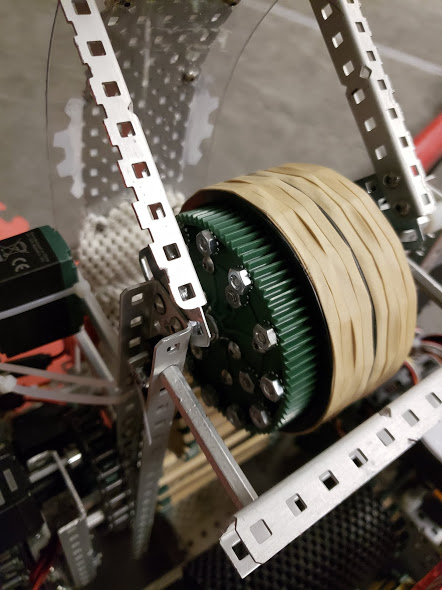

Legacy Hardware Based Design
Our team utilized the design process to ensure that each section of our robot would perform as well as possible. We carefully brainstormed and designed each aspect of the robot and analyzed how they performed on the field. With each competition, we not only saw which designs worked well, but which features allowed them to perform.
Given the limitations of the old legacy hardware, we had to utilize each of its features to its fullest potential in order to compete with the powerful V5 systems.
Drivetrain
Our drivetrain was designed with agility and mobility as its focus. The drivetrain utilizes Omni-wheels allows us to make quick sharp turns. Our drivetrain with the legacy hardware used six high-speed motors at 160 rpm. The drive train featured cutouts to save interior space as well as two long vertical c-channels at the front of the drive to rotate low flags.
Descorer
After participating in several competitions and discussing strategy, we decided to design a system to efficiently remove caps that were placed onto posts. The aptly-named descorer was a long rod that was attached to a torque motor with a 100 rpm cartridge. Due to high amounts of torque acting on the lever, we used a 1:5 gear ratio for a final rotational velocity of 20 rpm.
Flywheel
In order to hit the high flags efficiently, our team decided to use a single flywheel design due to its strong launching power and reliability. Our flywheel stores kinetic energy through its rotational inertia. To increase the rotational inertia of the flywheel, we attached a gear with several screws onto the axle The static friction between the ball and the flywheel drives the ball around and out of the hood. In order to increase the friction between flywheel and the ball, we attached rubber bands on the outside of the flywheel.
Intake
Our intake was split into two different stages: the intake and indexer. The reason for the intake was to transport the ball to the flywheel while the indexer held the balls for the flywheel to shoot. The front roller maintained 3 rollers decreasing in size as they reached closer to the path. The path was a final roller wrapped in Vex Matting to increase exit velocity of the ball to the indexer. The advantage to this design was that during a skills run or a match, we could hold and intake balls while being able to flip caps at the same time with our front roller.
- © Parkland High School Engineering Club
- Design: HTML5 UP and Arjun Vedantham.